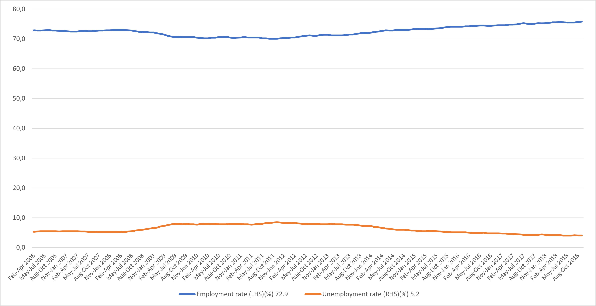
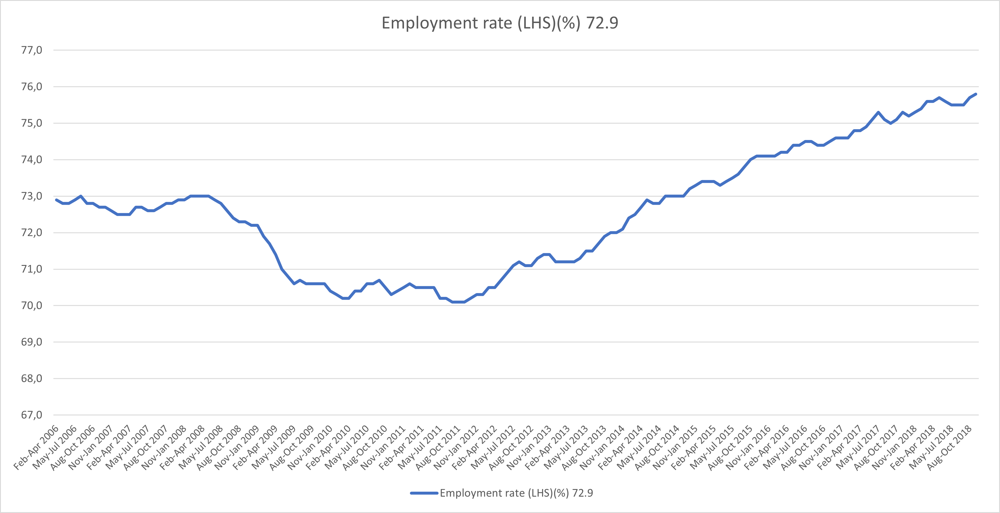
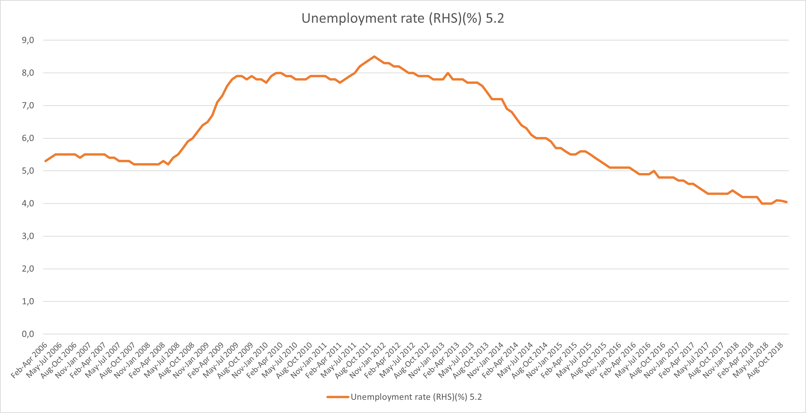

Der Einfluss von irreführenden Datenvisualisierungen
In einer digitalen Welt sind Menschen tagtäglich mit einer Vielzahl an Daten konfrontiert. Datenvisualisierungen werden daher eingesetzt, um komplexe Daten möglichst verständlich lesbar zu gestalten. Durch die visuelle Darstellung der Daten, sind diese mit nur einem Blick erfassbar und interpretierbar. Jedoch ergeben sich durch falsch erstellte Diagramme Missdeutungen und Irrtümer, selbst wenn die zugrunde liegenden Daten korrekt sind. Folgende Betrachtung dieser Thematik untersucht die häufigsten Fehler, welche bei Datenvisualisierungen auftreten, und bietet im Zuge dessen Unterstützung bei der Erkennung dieser Manipulationsmöglichkeiten.
Balkendiagramm:
Ein Balkendiagramm ermöglicht den Vergleich von kategorialen Daten. Ein Beispiel dafür ist die Nebeneinanderstellung der Verkaufszahlen von unterschiedlichen Abteilungen in einem Unternehmen. Bei der Annahme, dass alle Abteilungen eine ähnliche Leistung erbringen, würden sämtliche Balken in einem korrekten Balkendiagramm nahezu dieselbe Höhe aufweisen. Jedoch besteht bei Balkendiagrammen die Möglichkeit, die Y-Achse wertmäßig zu kürzen, wodurch die grundlegende Notwendigkeit einer gemeinsamen Nullachse nicht weiter erfüllt werden kann. Durch die Veränderung dieser Achse werden die Verhältnisse der Balken verfälscht. Optisch ergibt sich dadurch ein stärkerer Höhenunterschied zwischen den Balken. Eine schnelle Betrachtung der Balken würde demnach suggerieren, dass ein stärkerer Unterschied zwischen den Abteilungen gegeben ist als tatsächlich vorhanden. Insofern ist das Diagramm nur bei einer genaueren Betrachtung korrekt lesbar.
Kreisdiagramm:
Ein Kreisdiagramm ist vor allem zur Darstellung von Prozentwerten geeignet. Es muss dabei jedoch beachtet werden, dass Kreisdiagramme durch die Darstellung der Werte über Winkel und Flächen meist die Wahrnehmung beeinträchtigen. Dadurch können die Werte in Kreisdiagramme nicht immer klar differenziert werden. Im Vergleich dazu können in einem Balkendiagramm die Daten akurater abgelesen und Größenunterschiede besser eingeschätzt werden.
Ein weiterer Fehler, der häufig in Verbindung mit Kreisdiagrammen auftritt, ist der 3D-Effekt. Mit diesem Effekt wird das Diagramm in einer dreidimensionalen Perspektive dargestellt, wodurch Segmente des Kreises in den Vordergrund rücken und somit größer dargestellt werden. Somit wird nahegelegt, dass die vordergründigen Elemente größere Werte enthalten. Erst durch den Blick auf das vergleichbare zweidimensionale Diagramm wird deutlich, wie stark dieser Effekt die Verhältnisse verfälscht.
Liniendiagramm:
Bei Liniendiagrammen ist es möglich, zwei Y-Achsen zu verwenden. Bei dem Vergleich der Arbeitslosenrate mit der Beschäftigungsquote wird die Problematik dieser Option greifbar. Aufgrund der unterschiedlichen Wertebereiche der beiden Achsen werden die Linien ungleich zueinander visualisiert, wodurch abhängig von den Grenzen verschiedene Korrelationen vorgetäuscht werden können.
Für eine korrekte Darstellung können in diesem Fall die beiden Y-Achsen zusammengefasst werden. Diese Darstellung der Daten macht deutlich, dass die Arbeitslosenrate stets viel geringere Werte aufweist. Jedoch zeigt sich, dass durch diese Ansicht die Details der Werte deutlich weniger präzise dargestellt werden. Für eine deutliche Aussage, ohne eine Korrelation vorzutäuschen, ist es ratsam, die Linien voneinander zu trennen und in separate Diagramme aufzuteilen.
Y-Achsen zusammengefasst
Diagramm aufgeteilt für mehr Details
 